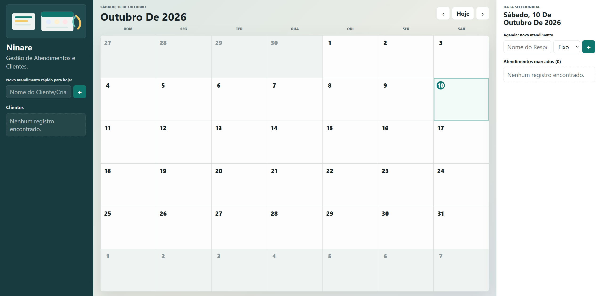

Análise de Dados
Transformo dados em informações úteis para apoiar decisões. Trabalho com Excel, Power BI, Power Query, DAX e SQL para estruturar, analisar e visualizar dados de forma clara e objetiva.
Analista de Dados
Analista de Dados & Desenvolvedor Fullstack. Transformo dados e necessidades de negócio em soluções digitais funcionais, organizadas e eficientes — utilizando Python, SQL, Power BI e tecnologias web.
37+
Projetos feitos
22+
Clientes satisfeitos
2 anos
Experiência
O que eu faço
Transformo dados em informações úteis para apoiar decisões. Trabalho com Excel, Power BI, Power Query, DAX e SQL para estruturar, analisar e visualizar dados de forma clara e objetiva.
Desenvolvimento de soluções fullstack utilizando Python e Javascript, com foco em aplicações organizadas, funcionais e escaláveis. Tenho interesse especial no desenvolvimento de APIs, sistemas web e automações.
Busco utilizar programação e tecnologia para simplificar tarefas e resolver problemas do dia a dia. Desenvolvo scripts, automações e soluções personalizadas combinando Python, dados e bancos de dados.
Portfólio

Aplicação web desenvolvida para centralizar a gestão de atendimentos, permitindo organizar a agenda, consultar horários disponíveis, acompanhar valores e controlar o fluxo financeiro do negócio. O projeto está sendo desenvolvido com foco em simplicidade, praticidade e uma experiência de uso adequada à rotina profissional.
Acesse o projetoDesenvolvimento Full Stack e manutenção dos sistemas da DMT, atuando na refatoração e evolução do front-end e back-end com Python, Node.js, React e JavaScript, além de HTML e CSS para desenvolvimento e adequação de interfaces. Utilização de PostgreSQL para gerenciamento de dados. Responsável pela implementação e modificação de componentes, menus, dashboards e módulos, além da adaptação dos sistemas para torná-los mais personalizáveis e reutilizáveis por diferentes clientes, preservando as funcionalidades existentes e as regras de negócio.
Acesse o projeto
Projeto desenvolvido para estruturar e organizar dados, criando dashboards e soluções de automação para facilitar a análise e o acompanhamento de informações em estabelecimentos de delivery. A aplicação de ferramentas de dados permitiu transformar informações dispersas em indicadores mais claros e úteis para tomada de decisão.
Acesse o projetoDesenvolvimento de uma landing page otimizada para consolidar a presença digital de uma marca especializada em cuidado materno-infantil e apoio às famílias. O projeto foi construído com HTML, Tailwind CSS e JavaScript nativo, criando uma interface moderna, responsiva e com foco em alta performance. A estrutura centraliza a apresentação dos serviços, metodologia de cuidado e dúvidas frequentes, integrando um fluxo direto e estratégico para a captação de contatos via WhatsApp, garantindo uma experiência de navegação fluida, confiável e humanizada.
Acesse o projetoSobre mim
Profissional de Tecnologia, formado em Sistemas para Internet, pós-graduado em Análise de Dados e atualmente me aperfeiçoando em Inteligência artificial e Machine Learning, com foco em Python, SQL, análise de dados, desenvolvimento Fullstack e automações de processos. Minha trajetória profissional também inclui experiência na área da saúde, o que contribuiu para desenvolver organização, responsabilidade e capacidade de trabalhar com processos e tomada de decisões.
Tenho interesse em transformar problemas em soluções práticas por meio da tecnologia, combinando programação, dados e automação.
Quando não estou estudando ou desenvolvendo projetos, gosto de explorar novas tecnologias e transformar ideias em projetos reais.
Stack & ferramentas
Avaliações
"Ótimo profissional"
“Renan demonstra facilidade para aprender novas tecnologias e transformar conceitos em soluções práticas. Tem uma abordagem bastante orientada à resolução de problemas.”
"Tínhamos um prazo curto e uma ideia ainda pouco definida. Renan conseguiu transformar o conceito em uma solução organizada e funcional, aplicando seus conhecimentos de tecnologia, dados e desenvolvimento com bastante autonomia."
Entre em contato
Estou aberto a novas oportunidades na área de Tecnologia, especialmente em Análise de Dados e Desenvolvimento Fullstack. Seja para uma oportunidade profissional, projeto ou colaboração, entre em contato para conversarmos.